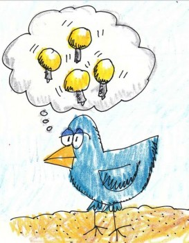

О том, что такое twitter, где они используется, как служит для seo и smo специалистов, сателлитчиков и как его использовать я сегодня рассказывать не буду. Сомневаюсь что я вообще буду рассуждать о подобных вещах.
Это дело блогеров и всяким там smm специалистов. Мы же люди дела, и знаем что к чему.
Я вам расскажу:
- Как массово регистрировать твитер аккаунты;
- Как набрать побольше фолловеров;
- Как автоматизировать массовый постинг записей в ваш твиттер аккаунт;
В уроке я предполагаю использовать как платный, так и бесплатный софт. Также нулл версии. Да простят меня разработчики за такую гадость.
Где достать много twitter аккаунтов
Существует несколько удобных способов:
Регистрация вручную
human xedan emulator или zenno poster
Купить twitter аккаунты
Регистрация с помощью ТвиПостер
Раскрутка ваших твиттер аккаунтов
Мы говорим только о автоматизированных способах, создаём ботов. Ручной труд скучен;)
Для этого можем использовать:
Твидиум
Твипостер
TweetAttacks
Раскрутка твиттера заключается в фолловинге аккаунтов, которые с большей долей вероятности ответят взаимностью. Например вот англоязычный список фолловеров, а вот и русскоязычный. Естественно такие списки обновляются очень часто, и я буду выкладывать их понемногу;)
Постинг сообщений в твиттер
Есть множество платных и бесплатных скриптов для постинга в твитер, они умеют размещать твиты и по расписанию, и все скопом, и по условиям. Засырать твиттер может даже мой любимый Зеброид. Хотя я предпочитаю использовать специализированный софт. А он всё тот же, что я описал немного выше. Это Твидиум, ТвиПостер и ТвитАттакс.
Автоматизацию постинга в твиттер я буду показывать пока на примере TweetAttacks. А если повезет, то и на ТвиПостере.
Вступительное слово я сказал. Дальше будет видеоурок и необходимый софт для работы с twitter’ами. Видео пока выкладываю в свободном доступе, а вот необходимый софт будет доступен только для зарегистрированных пользователей.
Насчет видео — это моя первая попытка снимать голосовое видео, естественно я волнуюсь, забываю фразы, ааакаю и эккаю, но прошу вас не обращать на такие мелочи внимания, а внимательно следить за тем, что я пытаюсь донести.
В комментариях (или аське) был бы очень рад услышать какие моменты неясны, желательно с указанием времени на видео.
А вот и ссылки на скачивание:
Версия в видеоуроке. Старая, но рабочая
Самый последний доступный на данный момент крякнутый версий. У меня он не запустился(
Смотрите также:
- Скопировать стиль из фотошопа на сайт
- Контентдаунлоадером
- Генерирование моя страница
- Перевод Плагинов вордпресс
- Woocommerce
| Комментарии: |

{kind=link}
{kind=link}
Спасибо за подробную инструкцию по ТвитАттакс. Нашла то, что искала.
@Елена Шевцова
Пожалуйста, рад что вам пригодилось
А у меня, при запуске задания пишет в графе status и message:
Невозможно загрузить файл или сборку «HtmlAgilityPack, Version=1.3.9.1, Culture=neutral, PublicKeyToken=bd319b19eaf3b43a» или один из зависимых от них компонентов. Не удается найти указанный файл.||Невозможно загрузить файл или сборку «HtmlAgilityPack, Version=1.3.9.1, Culture=neutral, PublicKeyToken=bd319b19eaf3b43a» или один из зависимых от них компонентов. Не удается найти указанный файл.
Поможите?
@Артур
Перекачайте, это видно глюк софты.
Я открыл доступ к обоим программам.
Владимир, все ок! Спасибо
А как скоро «безотказные» ответят? Тоесть станут моими читателями
Разумный взгляд на раскрутку написано в посте.
Почему у меня в графе статус и мессадж, вот такая надпись:
Базовое соединение закрыто: Не удалось установить доверенные отношение для защищенного канала SSL/TLS
кратко и полезно, это воистину уникальная информация!
Выдаёт вот такую ошибку — «длина не может быть меньше нуля. имя параметра length»
@Alex_Betu
Зачем вам нужны программы для раскрутки твиттеров?Ведь твиттер создан для новостей или слежением за человеком в данный момент.